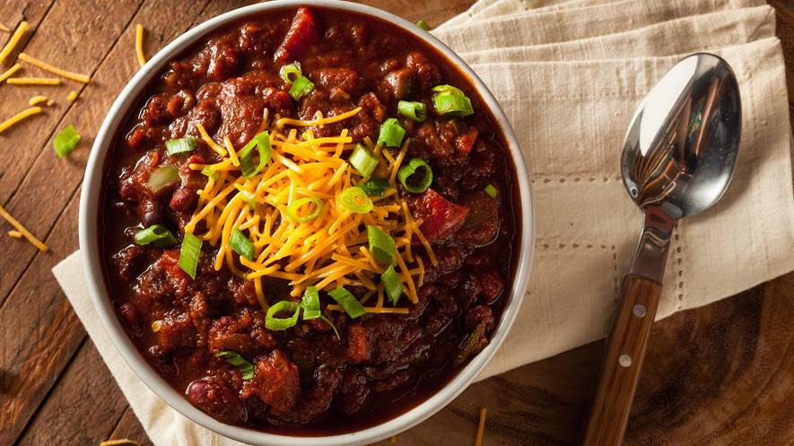

<div class="chilliStyle">
<!-- Image: Not provided -->

<div id="chilliHead">

    <h1>Crockpot Chili</h1>

    

    <h3>Serves: 6</h3>

    <h3>Preparation: 25 minutes</h3>

    <h3>Cooking: 6 hours</h3>

    <h4>Difficulty: Medium</h4>

</div>


<h3>Ingredients:</h3>

<button id="showIngredients">Show Ingredients</button>
<button id="hideIngredients">Hide Ingredients</button><br>

<input type="radio" name="radio" id="halfRecipe" value="half"> Half the Recipe

<input type="radio" name="radio" id="defaultRecipe" value="normal">Default Recipe

<input type="radio" name="radio" id="doubleRecipe" value="double">Double the Recipe <br>

<!-- <button id="testingListChange">TEST</button>

    <ul id="testList">
        <li><span>2</span> BLOCKS OF CHEESE</li>
    </ul> -->

<div>

    <ul id="chilliIngredients">

        <li> <span>2</span>  tbsp. cooking oil</li>
        <li> <span>1</span>  cup onion</li>
        <li> <span>1</span>  cup chopped peppers</li>
        <li> <span>4</span>  tbsp. Chili powder</li>
        <li> <span>1</span>  tsp. Hot chili powder (optional)</li>
        <li> <span>1</span>  lb ground beef or chicken</li>
        <li> <span>2</span>  cans Red Beans</li>
        <li> <span>2</span>  cans Kidney Beans</li>
        <li> <span>2</span>  cans Tomato Puree</li>
        <li> <span>2</span> cans Tomato Sauce</li>
        <li> <span>1</span>  cup shredded cheese (optional)</li>
        <li> <span>1/2</span> cup sour cream (optional)</li>
               
    </ul> 
</div>


<h3>Insructions:</h3>

<button id="showLunch">Show Instructions</button>
<button id="hideLunch">Hide Instructions</button>

<ol id="lunchInstructions">
    <li>Heat cooking oil in 2 quart skillet.</li>

    <li>Saute onions and peppers for 5 minutes.</li>
    
    <li>Add spices and stir for 30 seconds.</li>
    
    <li>Add meat and cook until browned. Approximately 15 minutes.</li>
    
    <li>Pour contents of skillet into 3 quart crock pot.</li>
    
    <li>Rinse beans and place in crockpot.</li>
    
    <li>Open and pour Tomato puree and sauce into crock pot.</li>
    
    <li>Cover crockpot and cook on low for 6 hours.</li>
    
    <li>Serve into individual bowls and top with sour cream and cheese.</li>
</ol>


</div>